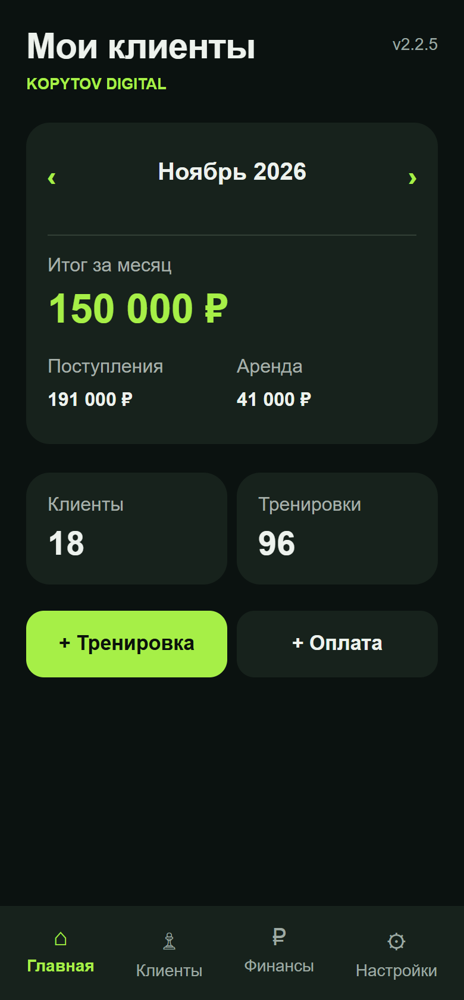
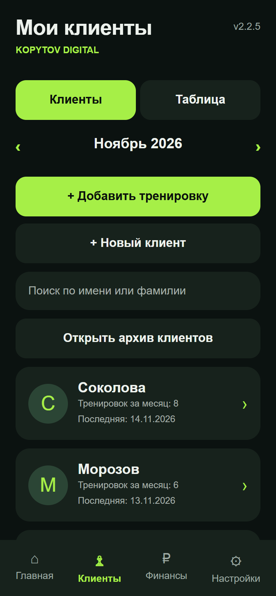
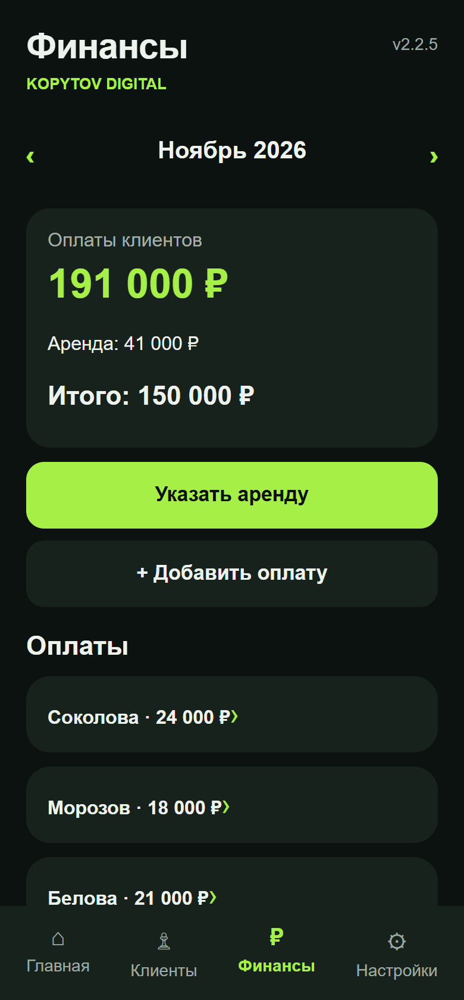
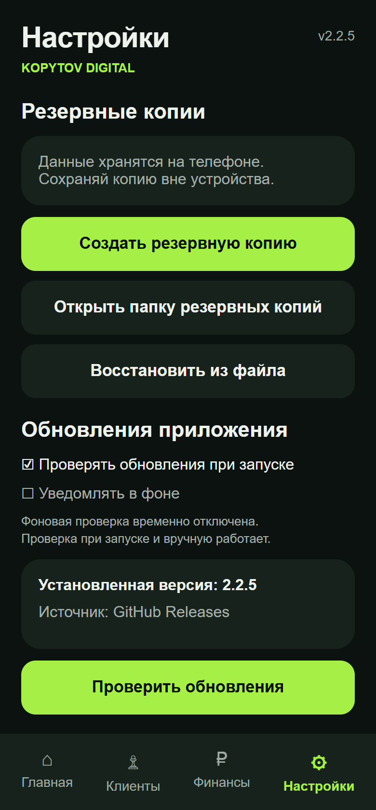

INDEPENDENT WORKING PRODUCT · ANDROID · v2.2.5
Moi Klienty
An Android app for tracking clients, training sessions and payments. Built for my own work as a personal trainer.
Kotlin · Android SDK · SQLite · Gradle · GitHub Actions










Demonstration screens recreated from the version 2.2.5 interface. Names, dates, measurements and financial figures are fictional. No real client data is published. The app interface is in Russian.
The task
Keep clients, training history and payments together instead of scattered notes. The app needs to work offline and support manual data backups.
Implemented
- Client records, training history and a shared table with dates, session numbers and notes.
- Client search and archive, profiles with training, payment and custom measurement history.
- Measurement charts and changes between dates.
- Payments, monthly rent and a monthly financial summary.
- Local SQLite storage, ZIP backups with data and photos, and restore with legacy JSON support.
- APK builds via GitHub Actions, distribution via GitHub Releases, and manual and startup update checks.
The result
I use this app in my own practice; the version presented here is 2.2.5. This is an independent product for my personal needs, not a client commission. Development continues as new needs arise.
The source code is private. App releases are publicly available.